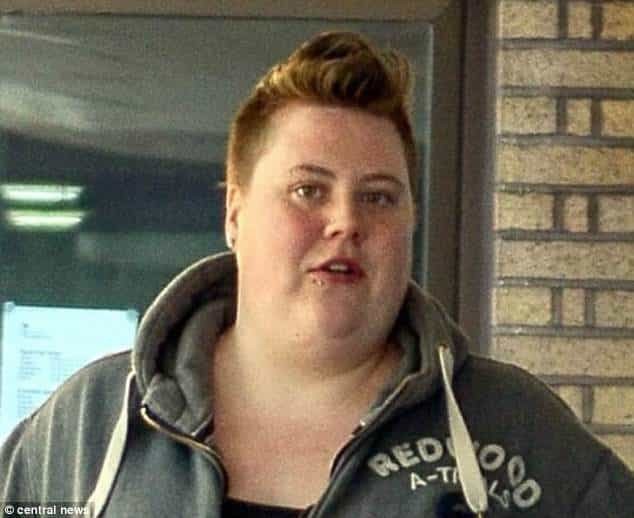
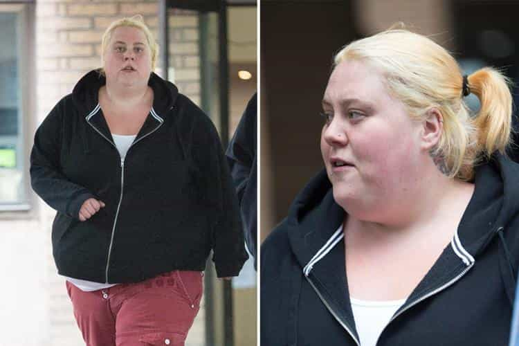
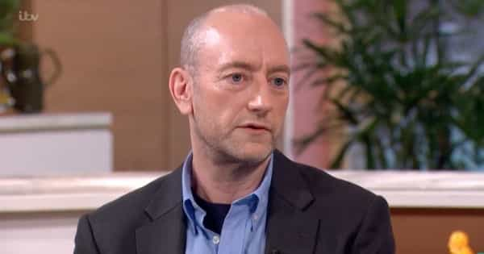

Prosecutor Madeleine Moore told the court police spent 6,400 hours [38 straight weeks’ worth of manpower!] investigating Beale’s claims at a cost of at least £250,000, and the trial cost at least £109,000.
— The Daily Mail‘s report on Jemma Beale and how seriously police took her multiple false rape allegations
British men in general may be sexually thirsty, but they are certainly not thirsty enough to rape a woman who looks like Jemma Beale. Yet this highly unattractive woman managed to falsely accuse fifteen men of rape and sexual assault before she was jailed for ten years, representing a mere six or seven months for each of her victims. Most of these men, as we would expect, had zero sexual activity with Beale.
One of her victims, Mahad Cassim, spent two years of his original seven-year rape sentence in prison before he was released. Another falsely accused man had to escape Britain for good. Why? Because, armed with a political and social climate of “listen and believe always,” feminists and their enablers have successfully argued for rape quotas that leave matters of evidence and due process in the dustbin of history.
She was only caught and jailed because she went too far

Like with many other high-profile false rape cases, Jemma Beale was only undone by her own mistakes.
Had Jemma Beale restricted herself to two or three, maybe even five false rape accusations, it is almost certain that she would not be in jail right now. What undid her was her making fifteen of these highly bogus reports. It is a classic case of overextension and a more intelligent but malicious woman would have exercised greater self-control in their attention-seeking.
The ease with which police believed—or were forced to believe—Jemma Beale provides further evidence that the only truly effective way to fight against a false rape accusation is to wait for your accuser to completely unravel herself. Remember: there is no need for “proof beyond reasonable doubt” for you to be convicted, imprisoned for years or decades, and officially branded a sex offender for life.
Yes, these kinds of rape happen, but they are rare

The more photos you post of her, the more ridiculous her story becomes.
Unfortunately, there are some very depraved individuals out there. Occasional stories of seasoned criminals raping elderly women surface, for example. Regardless, SJWs themselves mostly concede that younger, often more attractive women are the principal targets of alleged sexual assault, irrespective of how many fat, repulsive girls might join SlutWalk marches and claim they have been raped a billion times by Brad Pitt lookalikes.
If Jemma Beale can get away with making fifteen false rape accusations, imagine how “efficient” the allegations of an average or attractive woman would have been. The most amorphous verbal “sexual harassment” allegations, like the ones against the fired Bill O’Reilly, are perfectly suited to non-ugly women, after all. The effects are only amplified with more concrete claims like rape.
It is coming to the point where a man may only be able to conclusively prove his innocence in rape cases by producing a secret, usually illegal video recording of consensual sexual activity, or simply using a body cam in all his other interactions with women.
Our police are being politically bullied into pursuing frivolous cases

Mark Pearson was falsely accused by a woman identified as Game of Thrones actress Souad Faress in the most astonishing and farcical of circumstances.
There is understandable outrage about how police continue to pursue what turn out to be very bogus cases. Institutionally, however, I am not sure what else we can expect. Britain’s Crown Prosecution Service (CPS) and top police have made it clear time and time again that they expect more convictions, rather than sound convictions. Just ask one Mark Pearson, who faced months of hell from the CPS after perhaps the most ridiculous rape accusation in recorded history.
Inasmuch as we want regular police to resist any anti-due process diktats and instead investigate allegations meticulously but fairly, these public servants are under incredible strain to meet what their political and police superiors demand.
Until we see wholesale changes in the way legal systems–and not just Britain’s–operate, men need to be very careful about any interactions they have with women, no matter how ugly they are. A woman who looks like Jemma Beale has a much better chance of being believed nowadays than you do.
Read More: Game Of Thrones Actress Souad Faress Falsely Accuses Man Of Rape For Walking Past Her